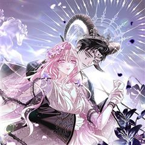
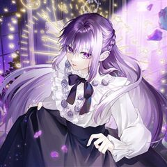

남주의 입양딸이 되었습니다 같은 웹툰 추천

남주의 입양딸이 되었습니다 · 또나 / 라티네
남주의 입양딸이 되었습니다 재밌게 봤다면 이 웹툰들도 좋아할 거예요. 같은 장르이면서 빙의, 설렘폭발, 로판 같은 요소가 겹치는 작품을, 겹치는 요소가 많은 순서로 20개 골랐어요.
2026-10-08 기준 · 네이버웹툰·카카오웹툰·레진코믹스 · 성인 작품 제외
내 취향으로 직접 골라 추천받기 →-
1
 카카오웹툰
카카오웹툰남편을 내 편으로 만드는 방법
판타지 소설 속 남편의 손에 죽는 악역 조연, ‘루드베키아’가 되었다. 이 세계의 망할 아버지는 내 정략결혼 상대를 또 물어왔다. 문제는 그 상대가 바로 날 죽이게 될 남편이라는 것! 일단은 살길을 찾아야 한다. 북부 사람들에게 최대한 무해하게 보이…
빙의설렘폭발로판로맨스카카오웹툰에서 보기 → · 남편을 내 편으로 만드는 방법 같은 웹툰 → -
2
 카카오웹툰
카카오웹툰마론 후작
하필이면 곧 죽을 운명인 희대의 악녀, 헤일리의 몸에 빙의했다. 빙의에 적응하기도 전에 협곡 아래 오염된 지역에 버려지고 말았다. '명색이 빙의자인데!' 하지만 죽으라는 법은 없었는지 “알겠냐? 이미 지나간 과거에 집착해서 화를 내다보면 내일의 일을…
빙의설렘폭발로판로맨스카카오웹툰에서 보기 → -
3
 카카오웹툰
카카오웹툰전남편이 남주가 된 것에 관하여
남편의 반란이 실패하며 함께 처형당한 래나 코넬리. 평소 즐겨읽던 소설 속 엑스트라 마법사, '아샤 블리스'에 빙의된다. 원작의 심기를 거스르지 않고 쥐죽은 듯 살고 있던 어느 날, 카르한 제국 최고의 권력자이자 소설 속 남자주인공 '칼리고 에투스'…
빙의설렘폭발로판로맨스카카오웹툰에서 보기 → -
4
 네이버웹툰
네이버웹툰피폐물을 힐링물로 만드는 방법
[살아생전 즐겨보던 소설에 환생했다.] 너무 진부하다구요? 아닐 걸요! 왜냐면 그 소설이... 19금 피폐물이거든요...! ̗̀(ꀬ⏖ꀬ∴) 예쁘고 상냥한 여주인공의 동생으로 환생했지만, 언니의 새드엔딩을 지켜볼 수 없었던 레나티스는 언니 대신 잘생긴…
빙의설렘폭발로판로맨스네이버웹툰에서 보기 → -
5
 카카오웹툰
카카오웹툰마음이 이끄는 대로
왕과 국혼을 앞두고 물가에 몸을 던진 공작가의 딸 헤일리에 빙의한 이재. 그런데 왕의 등 뒤로 보여선 안될 원혼들이 보인다! 국왕 로더릭에게 몰려드는 원혼들을 퇴마하려 고군분투하는 날이 이어진다. 로더릭은 이재와 함께 있으면서 맑아지는 정신과 신체…
빙의설렘폭발로판로맨스카카오웹툰에서 보기 → -
6
 카카오웹툰
카카오웹툰악녀의 맞선남이 너무 완벽하다
소문난 악녀 '이본 아젠트호즈'에 빙의 했다! 원작에서는 남주와 맺어진 여주를 질투하다가 비극적 최후를 맞은 악녀였지만, 빙의 후 이본은 평화롭게 다이아 수저의 삶을 즐기기로 다짐한다. 하지만 소설과 전개가 달라지는데?! “이본의 .. 어장이라면,…
빙의설렘폭발로판로맨스카카오웹툰에서 보기 → -
7
 카카오웹툰
카카오웹툰감금물의 하녀로 살아가기
대한민국의 평범한 회사원이던 나, '유정인'. 교통사고를 당하고 눈을 떠보니 왕자를 탑에 가두고 유린한 하녀 '로제'가 되어 있었다. 왕자가 성 밖으로 나가는 순간 분명 난 죽은 목숨이야…! “왕자님과 거래를 하고 싶습니다.” 동의 없는 스킨쉽 금지…
빙의설렘폭발로판로맨스카카오웹툰에서 보기 → -
8
 카카오웹툰
카카오웹툰흑막의 독 감별사가 되겠습니다
선량한 직장인이었던 내가, 피폐 소설 <독사과>에 빙의했다. 그것도 교수형을 앞에 두고 독살로 생을 마감하는 악녀인, '지젤 로이즈빈'으로! 그런데, 암살자들이 가져온 독이 안 통한다? 심지어 과일 맛이 나잖아! "이건 양이 적으니까 괜찮아. 얼른…
빙의설렘폭발로판로맨스카카오웹툰에서 보기 → -
9
 카카오웹툰
카카오웹툰감방에서 남자주인공을 만났습니다
감방에서 남자 주인공을 만났다. 쟤가 19금 피폐 소설 남자 주인공이란 건 알겠는데……. 왜 저래? “왕! 왕! 왕! 으르르르.” 정신만 짐승이 되는 저주에 걸렸다더니……. 그렇다고 저주에서 깨어난 모습은 어떠냐. “채, 채, 책임질 거, 아니면,…
빙의설렘폭발로판로맨스카카오웹툰에서 보기 → -
10
 카카오웹툰
카카오웹툰남주들과 외딴섬에 갇혀버렸다
소설 속 남주들과 외딴섬에 갇혀버렸다. 그것도 19금 피폐 소설에 나오는 남주들과 말이다. 하지만 내가 빙의한 마거릿이란 캐릭터는 여주를 시기하여 괴롭히다가 곧 남주들에게 죽을 운명. 그러니 살아남으려면 일단 남주들에게서 도망가야 하는데... "마거…
빙의설렘폭발로판로맨스카카오웹툰에서 보기 → -
11
 카카오웹툰
카카오웹툰엑스트라에게 남주들을 빼앗겼다
원작에 등장하지도 않은 엑스트라에게 남주들을 빼앗긴 여주… 그게 바로 나다. 마왕을 무찌르고 돌아오는 길에 혼수상태에 빠진 셀로니아. 몇 달 동안 사경을 헤매다 살아났건만, 뭐? “파혼해 주었으면 해. 그레이스와의 결혼을 서두르고 싶거든.” “기사의…
빙의설렘폭발로판로맨스카카오웹툰에서 보기 → -
12

카카오웹툰흑막님, 결혼 빼고 다 해드릴게요!
결혼 첫날밤 악역 대공 남편에게 살해당하는 엑스트라, '엔리카 윈터소어'의 몸에 빙의했다. 끔찍한 죽음을 피할 방법은 우선 대공과의 결혼을 피하는 것뿐. "방법이 있습니다, 엔리." 물러날 곳이 없던 엔리카에게 성큼 다가온 한 남자. 그는 자신을 '…
빙의설렘폭발로판로맨스카카오웹툰에서 보기 → -
13
 카카오웹툰
카카오웹툰내가 죽은 뒤 꼬마 신랑은
8살이나 어린 꼬마 신랑과 정략결혼을 하게 된 리베냐. 불의의 사고로 죽었다. 눈을 떴더니 새로운 몸으로 빙의했다? 지긋지긋한 과거의 삶은 지우고, 새로운 삶으로 시작하려고 했는데... 우연히 만난 전남편의 상태가 이상하다? "단 한순간도... 널…
빙의설렘폭발로판로맨스카카오웹툰에서 보기 → -
14
 카카오웹툰
카카오웹툰피오니-살인귀 대공과의 미래를 보았다
착한 척, 연약한 척, 불쌍한 척. 독자에게 빡침 3종 콤보를 달성하는 빙썅 악녀 가브리엘라 나시렛에 빙의했다. 예정된 죽음에서 벗어나기 위해 원작과 관련 없는 남자, 북부 대공 에른스트 에퀘스에게 계약 결혼을 청했다. 그렇게 원작의 사건이 일어나는…
빙의설렘폭발로판로맨스카카오웹툰에서 보기 → -
15
 카카오웹툰
카카오웹툰악녀님의 최애로 간택된 사정
“세계관 최고 부자이자 권력가인 악녀님의 최애가 되어버렸다…?” 원작 여주의 들러리 역할인 조연 ‘라리트’에게 빙의했다. 더 이상 여주 셔틀로 살고 싶지 않았던 나는 세계관 최고의 부자이자 권력가인 악녀, 에반젤린에게 갈아타기로 결심했다. 그런데 이…
빙의설렘폭발로판로맨스카카오웹툰에서 보기 → -
16
 카카오웹툰
카카오웹툰악녀가 될 수밖에 없는 이유
희대의 미친년으로 불리는 악역으로 환생한 나. 하지만 나는 환호했다. 왜냐하면 악녀 르네 블레어는 돈이 많았으니까! 비록 작품 초반에 죽지만 아무렴 어때, 나쁜 짓은 그만두고, 앞으로 모두에게 잘하는 거야. 혹시 알아? 갑자기 돌변하면 흔한 악녀 빙…
빙의설렘폭발로판로맨스카카오웹툰에서 보기 → -
17카카오웹툰
집착남주 두고 튀려는 엑스트라입니다
[ 디엘로 아르젠타를 속여 순결을 빼앗아라. ] 딸의 등을 적의 이름으로 갈가리 찢어놓은 저열한 아비 알로제 공작의 전언이었다. 19금 피폐 소설 <세 공작 가문>의 악녀 엑스트라 " 크루아 알로제 "에 빙의한 주인공. 아르젠타 공작의 가짜 운명의…
빙의설렘폭발로판로맨스카카오웹툰에서 보기 → -
18

카카오웹툰레이디 비스트
그란디아 왕궁에서 배척당해 불행하게 산 공주, 엘리사. 전장의 폭군이라 불리는 타국의 공작과 계약 결혼하다! 오직 살아남는 것이 목표였기에 남편에게 어떠한 기대도 없었으나……. “이건 뭐지. 다리 사이에서 피가 흐르는데.” “어, 어떡해요. 아침에…
빙의설렘폭발로판로맨스카카오웹툰에서 보기 → -
19
 카카오웹툰
카카오웹툰그 쓰레기가 나였어요
역하렘 연애 육성 게임에 빙의했다. 온갖 악행을 저지르다 처단당하는 악녀, F-등급의 튤리아 프레지어로. “이렇게 끔찍한 스탯으로 살아남는 게 가능해?” “이 건방진 말투는 뭐야?!” 돈도 없고 운도 없고 모두에게 미움받으며, 아무도 날 사랑하지 않…
빙의설렘폭발로판로맨스카카오웹툰에서 보기 → -
20
 카카오웹툰
카카오웹툰악역이지만 편애받고 있습니다
'X 같은 세상, 망해라!' 과로로 죽어가며 한 마디. 이대로 세상을 떠날 줄 알았는데, 플레이하던 게임에 빙의했다. 불행인지 다행인지 전생의 개고생에 대한 보상으로 사람과 사물의 정보를 보는 특수한 능력을 갖게 됐다. 능력을 이용해 편안하고 여유로…
빙의설렘폭발로판로맨스카카오웹툰에서 보기 →